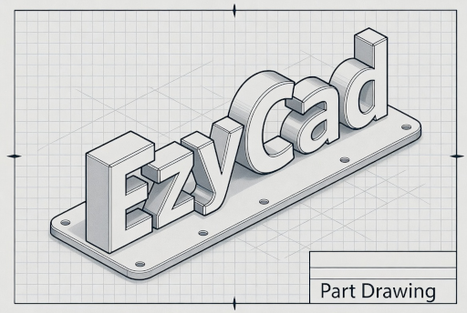
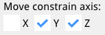
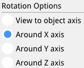

EzyCad Usage Guide

Table of Contents
Introduction
EzyCad (Easy CAD) is an open-source CAD application for hobbyist machinists to design and edit 2D and 3D models for machining projects. It supports creating precise parts with tools for sketching, extruding, and applying geometric operations, using OpenGL, Dear ImGui, and Open CASCADE Technology (OCCT). You can exchange geometry with other CAD tools, CAM, or 3D printing using STEP, IGES, STL, and PLY.
Source: github.com/trailcode/EzyCad · Project home: trailcode.github.io/EzyCad
EzyCad (with a y) is mechanical CAD — not EZCAD2/EZCAD3 laser marking software.
Getting Started
System Requirements
Windows (desktop), or WebAssembly (project home)
Not tested: Linux or macOS desktop builds
OpenGL-compatible graphics card
Installation
User Interface
Main Components
Menu Bar
File - New, Open, Save, Save as, Import, Export, Examples, Exit
Help - About, Usage Guide, and the separate Settings guide
Toolbar
Quick access to commonly used tools
Mode selection buttons
Operation tools
Sketch List
Shape List
Options Panel
Adjust tool parameters; related controls are grouped by headings (for example Sketch options, Extrude, Selection, Material, Polar duplicate), depending on the active tool.
If you resize the pane narrower than its controls, a horizontal scrollbar appears so long labels (for example Orthographic projection) stay readable.
Normal mode (Inspection): Selection is the 3D pick filter and Orthographic projection toggles the camera (persisted as
gui.inspection_orthographic). Material is the document preset for new solids that do not inherit from a clicked shape (for example toolbar Box, polar duplicate output). Face extrude reads the same preset in its Options Material row.To change material on a solid already in the scene, use the Shape List.
Chamfer and Fillet: distance and mode only; the result solid keeps the source shape’s material.
Move, Rotate, and Scale: transform options only (no material row there).
Sketch-related options (snap, length dimension placement, face extrude, shortcuts) are summarized in usage-settings.md.
Log Window
View operation history
Check for errors and warnings
Monitor system status
Sketch List
The Sketch List pane lists all 2D sketches in the current document. Open it from View -> Sketch List.
Each row is laid out left to right:
Expand - Click
>/vto show or hide details for that sketch (tooltip Expand details / Collapse details).Set current - Radio button (circle). The current sketch is used for editing and for operations such as extrude. If you are not already in a sketch tool or sketch inspection mode, choosing a sketch also switches to Sketch inspection mode; otherwise the active sketch tool stays selected (for example Add line remains active when you change sketches).
Rename - Click the name field and type a new name.
Visibility - Checkbox to show or hide the sketch in the 3D view.
Underlay - Checkbox to show or hide an image underlay when one is imported (disabled until an underlay exists; tooltip Display underlay).
Sketch properties -
[P]opens Sketch properties (import/remove underlay, calibration, transform). See Image underlay.Delete - Right-click the name and choose Delete.
When expanded, the row shows:
Dimensions - Table of length dimensions: visibility, editable name, and offset (label distance from the edge; 0 = automatic).
Nodes, Edges, Faces - Collapsible lists of element labels for inspection. Nodes lists user-placed points only (the ones with + markers in sketch mode), not every internal topology vertex or automatic edge midpoint. Edges and Faces use default labels (
E0,F0, …) or saved names where set. Dimension names are editable in the table above; node/edge/face names in these lists are read-only labels for reference.
The window can be closed with its close button; use View -> Sketch List again to show it.
Shape List
The Shape List pane lists every 3D shape in the current document (extrudes, imports, booleans, etc.). Open it from View -> Shape List.
At the top:
Hide all - When checked, hides every shape in the 3D view; when cleared, every shape is shown again (same as turning visibility back on for all rows).
For each shape, one row includes:
Name - Editable text field; change the label stored with the shape.
Right-click the name - Delete removes the shape from the document.
Visibility - Checkbox (tooltip visibility) to show or hide that shape in the 3D view.
Solid / wire - Checkbox (tooltip solid/wire) to switch shaded display or wireframe for that shape.
M - Click to open a Material popup; right-click M for Delete. The tooltip on M also notes that right-clicking the name deletes the shape.
Rows that match the current 3D selection are drawn with a slightly brighter style so the list stays in sync with what is selected in the viewer (tooltip Selected in 3D viewer when you hover the highlighted row).
The window can be closed with its close button; use View -> Shape List again to show it.
Scripting (Lua and Python)
EzyCad can run Lua and (on supported desktop builds) Python in embedded consoles (View menu). You get a live ezy.* / view.* API for logging, mode changes, counts, and a few model actions; script files under res/scripts/lua and res/scripts/python open as tabs (Lua startup scripts run automatically).
For shortcuts, sample scripts, binding tables, and limitations, see the Scripting guide.
File Operations
Supported Formats
Native format:
.ezyfiles
Basic Operations
New Project
Start with a clean workspace
Reset settings (view is not reset; see issue #43)
Open Project
Load existing
.ezyfiles
Save Project
Save current work to
.ezyfile
Import/Export
Startup project (defaults)
EzyCad can load a default document when it starts (geometry, camera, tool mode). See Startup project in the settings guide.
Edit Operations
Edit operations change your model (sketches or 3D shapes) and can be navigated with undo/redo.
Delete selected
Use D or the Delete key to remove the currently selected sketch elements or shapes.
Deletions are recorded in the undo history and can be undone/redone.
Undo and Redo
EzyCad includes document-level undo/redo for both sketches and 3D shapes.
What it does
Tracks modeling operations as steps in a history stack (sketch edits, extrudes, boolean operations, transforms, etc.).
Undo/redo restores the model state only; the 3D view (camera) is intentionally not changed so you can review changes from a consistent perspective.
When you undo or redo a step, the application returns to the mode that was active for that operation (e.g., sketch inspection vs normal inspection).
Shortcuts
Ctrl+Z - Undo last operation.
Ctrl+Y or Ctrl+Shift+Z - Redo.
These shortcuts work even when focus is in a pane such as Sketch List, Options, or Log.
Limits and notes
The history keeps a fixed number of recent steps (currently 50).
Cancel current operation (Esc)
Press Esc to cancel the current action or step back to a broader mode.
If something is in progress: Esc cancels it and discards the change. Examples: cancel a line you are drawing, revert an unconfirmed move/rotate/scale, cancel extrude preview, clear the distance or angle input dialog.
If nothing is in progress: Esc steps the application to the parent mode (one level up):
From a sketch tool (e.g. Add line, Add circle, Operation axis) -> Sketch inspection mode.
From Sketch inspection, Normal, or any shape tool (Move, Rotate, Scale, Extrude, Chamfer, Fillet, Polar duplicate, Create sketch from face) -> Normal (inspection) mode.
So repeated Esc from a sketch drawing tool first cancels the current element, then returns to Sketch inspection, then to Normal.
Modeling Tools
EzyCad uses a workflow-based approach to 3D modeling: start with 2D sketches, then transform them into 3D shapes using feature operations. This section covers both the sketching tools for creating 2D geometry and the 3D modeling tools for working with solid shapes.
Workflow: From 2D Sketches to 3D Shapes
The typical modeling workflow in EzyCad follows these steps:
Create a 2D Sketch: Use the 2D Sketching tools to draw 2D geometry on a sketch plane. Sketches consist of edges (lines, arcs, circles) that form closed shapes called faces.
Extrude the Sketch: Use the Extrude tool to convert 2D sketch faces into 3D solid shapes by extending them perpendicular to the sketch plane.
Modify 3D Shapes: Use 3D Modeling tools to transform shapes (move, rotate, scale) or create patterns (polar duplicate).
Apply Feature Operations: Use boolean operations (cut, fuse, common) or feature operations (chamfer, fillet) to refine your 3D model.
Key Concepts:
Sketches |
2D drawings on a plane that define the profile of your 3D shape |
Faces |
Closed regions within a sketch that can be extruded into 3D |
Shapes |
3D solid objects created from extruded sketch faces |
Feature Operations |
Transform sketches into 3D geometry or modify existing 3D shapes |
Importing 3D Geometries
In addition to creating 3D shapes from sketches, EzyCad supports importing existing 3D geometry from external CAD files. This allows you to:
Work with existing designs |
Import models created in other CAD software |
Combine workflows |
Use imported geometry alongside sketched shapes |
Modify imported models |
Apply EzyCad’s modeling tools to imported shapes |
Supported import formats:
STEP ( |
Precise B-rep (boundary representation) CAD exchange |
PLY ( |
Triangle mesh; fast to load compared to heavy STEP assemblies |
How to import:
Use File -> Import
Pick a
.step,.stp, or.plyfile (the dialog lists these types)Geometry is added as 3D shape(s) in the document
You can move, rotate, scale, and use imported bodies in boolean operations like native solids where the geometry allows it
PLY import notes:
Supported: ASCII PLY and binary little-endian PLY.
Not supported: binary big-endian PLY.
Meshes must use triangular faces (3 indices per face). Typical
vertexproperties x, y, z (and optional extra properties) are accepted; face elements must include a list property (e.g.property list uchar int vertex_indices) suitable for triangles.Imported PLY data becomes a mesh-style solid (many triangular faces), not a parametric STEP solid - file size and display performance depend on triangle count.
STEP import notes:
If the file cannot be read or contains no transferable geometry, a message explains the failure (invalid data, empty transfer, etc.).
Note: IGES and STL are available for export only, not import.
Exporting 3D geometries
Use File -> Export to save the current model for other CAD tools, CAM, or 3D printing.
STEP ( |
Precise B-rep exchange |
IGES ( |
Legacy CAD exchange |
STL |
Triangle mesh; files are written in binary form |
PLY ( |
Triangle mesh in binary little-endian PLY (tessellated like STL) |
Scope: If one or more 3D shapes are selected in the viewer, only those shapes are exported (with their current move/rotate/scale applied). If nothing is selected, all shapes in the document are exported together.
Mesh exports (STL and PLY): Surfaces are tessellated with a fixed linear deflection (same idea as typical STL export). Very complex B-rep models produce large mesh files.
How to export: File -> Export -> choose STEP, IGES, STL (binary), or PLY (binary), then pick a save location (desktop) or accept the browser download (WebAssembly).
For detailed information on creating 2D geometry, see the 2D Sketching guide. For information on working with 3D shapes, see the 3D Modeling section.
2D Sketching
See the 2D Sketching guide for full documentation of sketch tools: add node (points and edge splits), line and multi-line edges, circles, arcs, rectangles, squares, slots, operation axis, edge dimensions, and creating a sketch from a planar face.
Sketch snap (overview): While drawing or using Add node, picks can snap to existing geometry within Snap dist (Options panel). The main behaviors:
Vertex snap |
Lock to an existing corner when horizontal and vertical axis guides both align to the same point. |
Mid-point snap |
With Add node, a click near a straight edge (but not at its ends) snaps onto the segment; EzyCad places a new vertex there and splits the edge into two. You do not need to hit the line exactly. |
Edge midpoint |
Straight edges often expose a geometric midpoint as a snap target while drawing; that is separate from mid-point snap and from user-placed + nodes. |
More detail: Sketch snapping in the sketch guide.
3D Modeling
Transform Operations
Shape Move Tool (G)
The shape move tool allows you to reposition selected shapes in the 3D viewer with precision and flexibility.
Features:
Axis Constraints |
Restrict movement to the X, Y, or Z axis by toggling axis constraints in the options panel or using keyboard shortcuts. |
Interactive Distance Editing |
Enter or adjust the distance moved along each axis for precise control. Real-time feedback is provided in the viewer and options panel. |
Improved Plane Handling |
The move plane is automatically estimated based on the center of the selected shapes, making movement more intuitive. |
Finalization Logic |
The move operation completes when you confirm the action (e.g., left mouse button). |
Reset and Cancel |
Press Esc to cancel and revert to the original position at any time during the move operation. |
How to Use:
Activate Move Tool: Select one or more shapes and press G or click the icon.
Constrain Movement (Optional): Use the options panel to lock movement to a specific axis, or use keyboard shortcuts (e.g., X, Y, Z).

Example: Movement constrained on the Y and Z axes.
Edit Distance (Optional):
While moving a shape, you can press Tab to activate a floating distance input box for the current axis. If no axis constraints are set, you can edit distances for X, Y, and Z in sequence. If axis constraints are enabled, only the allowed axes are available for editing. After entering a distance, that axis is locked to the specified value. Pressing Tab again advances to the next available axis. After the distances for all participating axises are defined, the more will be finalized.Finalize or Cancel: Press the left mouse button to confirm and apply the move, or Esc to cancel and revert.
Tips:
Use axis constraints for straight-line moves.
Use interactive distance editing for precise adjustments.
You can always cancel and try again if the move isn’t as expected.
Shape Rotate Tool (R)
The shape rotate tool enables precise rotation of selected shapes around a specified axis in the 3D viewer.
Features:
Rotation Axis Options |
Choose between view-to-object rotation or constrain rotation to X, Y, or Z axis. |
Interactive Angle Editing |
Enter or adjust the rotation angle for precise control with real-time preview. |
Visual Feedback |
The rotation axis is displayed with color-coded indicators (Red for X, Green for Y, Blue for Z). |
How to Use:
Activate Rotate Tool: Select one or more shapes and press R or click the icon. You can also activate the tool and select the shape(s) to rotate afterwards.
Select Rotation Axis: (Optional)

Example: Rotation around on the X axis.
Press X to rotate around the X-axis (Red)
Press Y to rotate around the Y-axis (Green)
Press Z to rotate around the Z-axis (Blue)
Press the same axis key again to switch to view-to-object rotation
Edit Angle (Optional):
Press Tab to activate the angle input box
Enter the desired rotation angle in degrees
The preview updates in real-time as you adjust the angle
Pressing enter finializes the rotation
Finalize or Cancel:
Press the left mouse button to confirm and apply the rotation
Press Esc to cancel and revert to the original position
Tips:
Use view-to-object rotation for intuitive free-form rotation
Use axis constraints for precise rotations around specific axes
The rotation center point is displayed as a red dot for reference
Visible in wirefame rendering of the shape(s)
You can combine rotation with other operations for complex transformations
Shape Scale Tool (S)
The shape scale tool allows you to uniformly scale selected shapes around a computed center point.
Features:
Automatic center detection |
The scale center is estimated from the bounding box center of the selected shapes. |
Screen-plane scaling |
Scaling happens in a plane derived from the current view, making the interaction intuitive. |
Interactive preview |
Moving the mouse adjusts the scale factor and updates the shapes in real time. |
Safe bounds |
The scale factor is clamped to a reasonable range (e.g., between very small and very large values) to avoid degenerate geometry. |
How to Use:
Select shapes: Select one or more shapes in the 3D view or Shape List.
Activate Scale Tool: Click the Shape scale icon in the toolbar (or choose Scale from the Edit/Transform area if present).
Move the mouse:
The tool computes a scale center and a view-aligned plane.
Moving the mouse away from or toward the center changes the scale factor and previews the scaled result.
Finalize: Confirm the operation (e.g., by clicking to complete the interaction) to apply the scale permanently.
Cancel: Press Esc to cancel and revert to the original shape sizes.
Tips:
Scale works best when the view direction makes the movement relative to the center easy to see (avoid looking exactly edge-on at the objects).
Because the operation is undoable, you can experiment with different scale amounts and step back with Ctrl+Z if needed.
Feature Operations
Extrude Sketch Face Tool (E)
The extrude tool allows you to create 3D solid shapes by extruding 2D sketch faces along a direction perpendicular to the sketch plane.
Features:
Direct face selection |
Click directly on a sketch face to select it for extrusion |
Automatic view adjustment |
The view automatically rotates if the face plane is parallel to the view plane (within 5 degrees), providing better visibility for the extrusion operation |
Real-time preview |
See the extruded shape update in real-time as you move the mouse |
Interactive distance control |
Drag the mouse to adjust extrusion distance, or use the distance input dialog (Tab key) for precise control |
Distance annotation |
A dimension annotation displays the current extrusion distance |
Bidirectional extrusion |
The extrusion direction is determined by which side of the face plane you move the mouse to |
How to Use:
Activate Extrude Tool: Press E or click the icon to enter extrude mode
Select Face: Click on a sketch face that you want to extrude
The face must be part of a closed sketch (forming a valid face)
The system will automatically select the face closest to the camera if multiple faces overlap
Adjust Extrusion Distance:
Mouse drag: Move the mouse to adjust the extrusion distance in real-time
Precise input: Press Tab to open the distance input dialog and enter an exact extrusion distance
The distance annotation shows the current extrusion distance
Finalize: Click the left mouse button to confirm and create the extruded shape
Cancel: Press Esc at any time to cancel the extrusion operation
Keyboard Shortcuts:
E |
Activate extrude mode |
Tab |
Open distance input dialog for precise extrusion distance |
Esc |
Cancel current extrusion operation |
Enter |
Finalize extrusion (when using distance input) |
Tips:
Extrude works best when the view is not directly parallel to the sketch plane - the system will automatically rotate the view if needed
Use the distance input dialog for precise measurements
The extrusion direction depends on which side of the face plane you move the mouse to
Multiple faces from the same sketch can be extruded separately
Extruded shapes can be used in boolean operations (cut, fuse, common)
Common Use Cases:
Extrusion |
Select the circle face and extrude to create cylindrical shapes |
Base features |
Create the base feature of a part by extruding a profile |
Additive features |
Extrude additional features on existing parts |
Through features |
Extrude holes or cutouts by using the cut operation after extrusion |
Shape Polar Duplicate Tool
The polar duplicate tool allows you to create multiple copies of selected shapes arranged in a circular pattern around a rotation center point.
Features:
Circular array |
Creates multiple copies of shapes arranged in a circular pattern |
Configurable angle |
Set the total angle for the pattern (default: 360 degrees) |
Configurable count |
Set the number of duplicate elements to create (default: 5) |
Rotation option |
Choose whether duplicates are rotated as they’re copied (default: enabled) |
Combine option |
Choose whether to combine all duplicates into a single shape (default: enabled) |
Polar arm definition |
Define the rotation center and direction by clicking a point |
How to use:
Activate Polar Duplicate Tool: Click the icon to enter polar duplicate mode
Select shape: Select the shape that you want to duplicate
Define polar arm: Move the mouse to see a preview line (polar arm) from the shape center to the mouse cursor. Move to the origin of the operation
Configure options in the options panel (under Polar duplicate):
Polar angle: Set the total angle for the pattern (e.g., 360 deg for full circle, 180 deg for half circle)
Num Elms: Set the number of duplicate elements to create
Rotate dups: Checkbox to rotate each duplicate as it’s copied (default: enabled)
Combine dups: Checkbox to combine all duplicates into a single shape (default: enabled)
Material: Document preset for solids created when you click Dup (same setting as Normal mode Options Material)
Create duplicates: Click the “Dup” button in the options panel to create the polar duplicates
Options explained:
Polar angle |
The total angular span of the pattern. 360 deg creates a full circle, 180 deg creates a half circle, etc. |
Num Elms |
The number of duplicate elements to create. The original shape is not counted, so 5 elements means 5 copies plus the original. |
Rotate dups |
When enabled, each duplicate is rotated around its own center as it’s positioned. When disabled, duplicates maintain their original orientation. |
Combine dups |
When enabled, all duplicates are fused together into a single shape. When disabled, each duplicate remains a separate shape. |
Material |
Preset for new solids from Dup; matches Normal mode Options Material. Existing shapes: Shape List. |
Keyboard shortcuts:
Escape |
Cancel the current polar duplicate operation |
Tips:
The polar arm defines both the rotation center (at the arm’s end point) and the starting direction
Use the polar duplicate tool to create patterns like gear teeth, radial arrays, or circular arrangements
The rotation center is determined by where you click to set the polar arm end point
If “Combine dups” is enabled, all duplicates are fused into one shape, which is useful for creating complex patterns
If “Rotate dups” is disabled, all duplicates maintain the same orientation as the original
The tool works with multiple selected shapes - all selected shapes will be duplicated together
Common use cases:
Creating gear teeth or radial patterns
Arranging objects in a circular pattern
Creating symmetric designs with rotational symmetry
Duplicating features around a center point
Other Feature Operations
Create chamfers
Add fillets
Boolean operations:
Cut
Fuse
Common
Keyboard Shortcuts
General Operations
Ctrl+Z |
Undo last operation |
Ctrl+Y / Ctrl+Shift+Z |
Redo |
Ctrl+O |
Open file |
Ctrl+S |
Save file |
Ctrl+Shift+S |
Save as |
Esc |
|
Enter |
Confirm current operation |
Tab |
Distance/dimension input |
Shift+Tab |
Angle input (for line edges with angle constraint) |
Delete |
Remove selected elements |
Modeling Shortcuts
G |
Move mode |
R |
Rotate mode |
S |
Scale mode |
E |
Extrude mode |
D |
Delete selected |
Shape selection filter (Normal mode only)
In Normal mode, number keys set the Selection Mode filter for picking 3D shapes (same control as Options -> Selection Mode). Main keyboard 1-9 and keypad 1-9 are supported, except keypad 5 and keypad 2, 4, 6, 8 (see View navigation). The key order matches the list in the Selection Mode control (from compound down to whole shape):
Key |
Filter |
|---|---|
1 |
Compound |
2 |
CompSolid |
3 |
Solid |
4 |
Shell |
5 |
Face |
6 |
Wire |
7 |
Edge |
8 |
Vertex |
9 |
Shape |
While focus is in a text field (dimension input, script console, etc.), 1-9 are left to the UI: main.cpp does not call the global key handler when ImGui reports WantTextInput. Chamfer, fillet, and sketch modes may change the filter automatically when you enter them.
Lua and Python consoles
Open or close the Lua or Python consoles from View -> Lua Console or View -> Python Console (no default keyboard shortcuts).
View Controls
Mouse Controls
Left Click |
Select object |
Left drag |
Orbit view |
Middle drag |
Pan view |
Right drag |
Zoom |
Scroll Wheel |
Zoom in/out (Zoom scroll scale in Settings; hold Shift for finer steps) |
NumPad + / NumPad -, Shift+=, - |
Zoom in/out (keyboard; settings scale; Shift finer) |
View orbit (NumPad)
Press NumPad 8, NumPad 2, NumPad 4, or NumPad 6 (without Shift) to orbit the camera in steps, using the same axes as left-drag orbit (Open CASCADE AIS_ViewController convention: yaw about camera up, pitch about camera side). NumPad 8 / NumPad 2 pitch up or down; NumPad 4 / NumPad 6 yaw left or right. The default step is 45 degrees per key press. Num Lock off is recommended so the keypad sends these NumPad codes (see View navigation above).
View roll
Hold Shift and press NumPad 4 or NumPad 6, main 4 / 6, or Left / Right to rotate the view around the viewing axis (the axis pointing out of the screen), in fixed degree steps. Hold to repeat (same as zoom key repeat). The default step is 45 degrees per key press. If Shift+NumPad 4 or Shift+NumPad 6 misbehaves, use Shift+4, Shift+6, Shift+Left, or Shift+Right, or turn Num Lock off (recommended for all numpad view shortcuts).
To change the step for both orbit and roll, open View -> Settings, expand 3D view navigation, and adjust View rotation step. The value is saved in your settings file as gui.view_roll_step_deg (see Settings file reference).
More context on the 3D viewer stack: 3D viewer (Open CASCADE).
View Options
Reset view |
Reset the 3D view |
Fit to screen |
Fit the model to the viewport |
Toggle wireframe |
Switch wireframe display |
Change material appearance |
Adjust material display |
Adjust lighting |
Change lighting settings |
Tips and Tricks
Efficient Modeling
Use keyboard shortcuts for common operations
Utilize the toolbar for quick access to tools
Take advantage of the dimension input feature (Tab for distance, Shift+Tab for angle)
Use angle constraints for precise angular control when creating line edges
Use the log window to track operations
Troubleshooting
Check the log window for error messages
Verify file permissions for save operations
Ensure sufficient system resources
Update graphics drivers if experiencing display issues
Performance Optimization
Close unused sketches and shapes
Use wireframe mode for complex models
Optimize view settings for your hardware
Regular save operations to prevent data loss
Support
Documentation
Online - ezycad.readthedocs.io (built from this repository; same content as the guides below). Open from Help -> Usage Guide.
This usage guide (source: usage.md)
Settings (Settings pane, View menu, JSON settings file, startup project)
2D Sketching (including add node and image underlay)
The markdown files in the repository remain the canonical source; Read the Docs publishes them on each update. Video tutorials are not published yet.
Code quality and ongoing work
Contributors should follow ezycad_code_style.md for C++ in src/ and ezycad_doc_style.md when editing these guides. Sketching, UI, and build paths are still being refined; prefer small, focused changes and match existing patterns in the files you touch.
Community
Updates
Regular feature updates
Bug fixes
Performance improvements
Tool Icons
Basic Operations
- Inspection mode
- Shape move (G)
- Shape rotate (R)
- Shape scale (S)
Sketch Tools
- Sketch inspection mode
- Create sketch from planar face
- Define operation axis
- Add node
- Add line edge
- Add multi-line edge
- Add arc circle
- Add square
- Add rectangle from two points
- Add rectangle with center point
- Add circle (center and radius)
- Add circle from three points (planned feature)
- Add slot
- Dimension tool
3D Operations
- Extrude sketch face (E)
- Chamfer
- Fillet
- Shape polar duplicate
Boolean Operations
- Shape cut
- Shape fuse
- Shape common
For more information, see the README, usage-settings.md, or the GitHub repository.